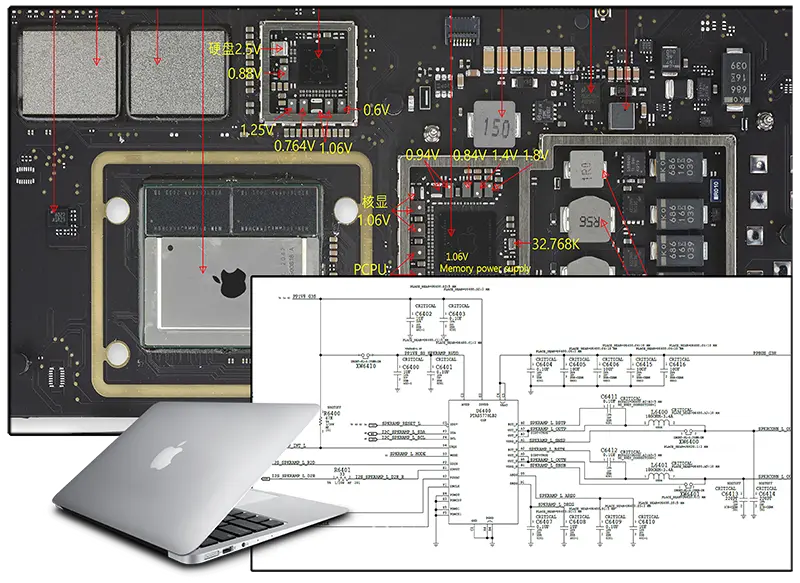
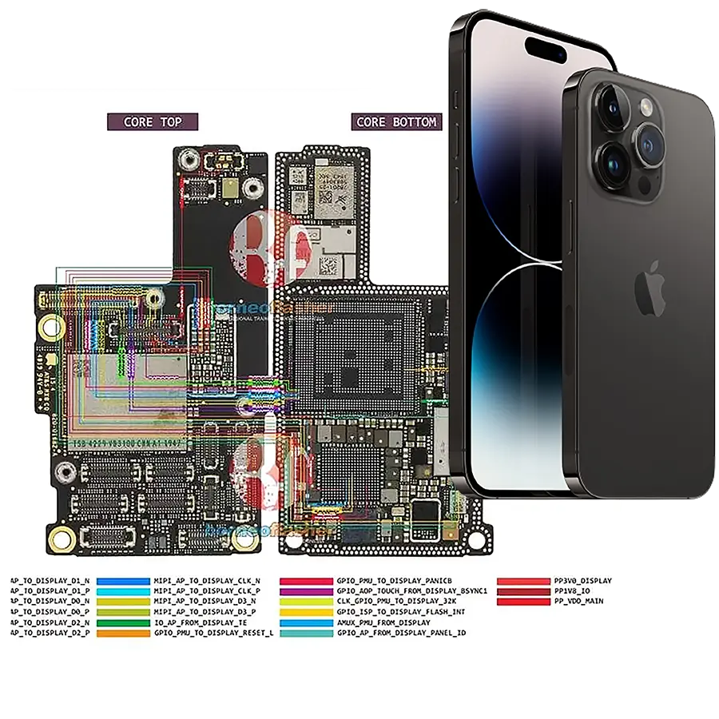
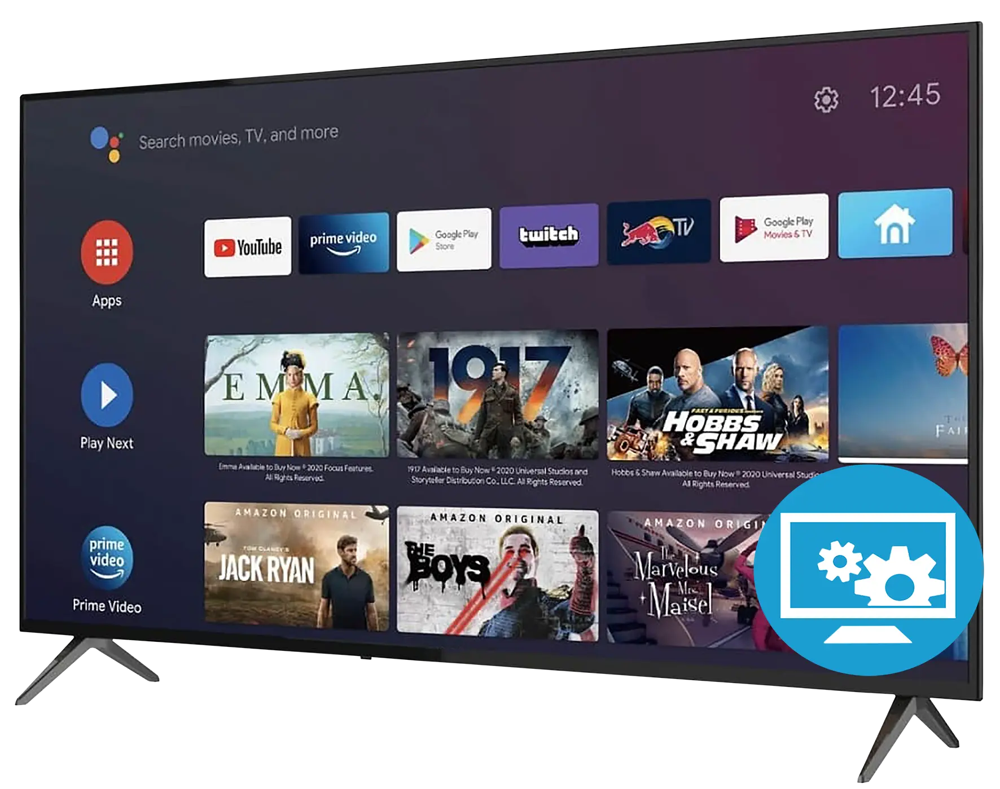
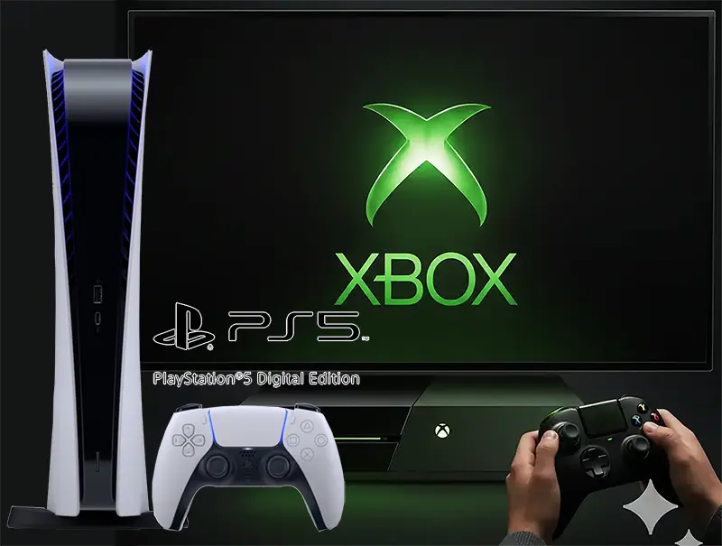
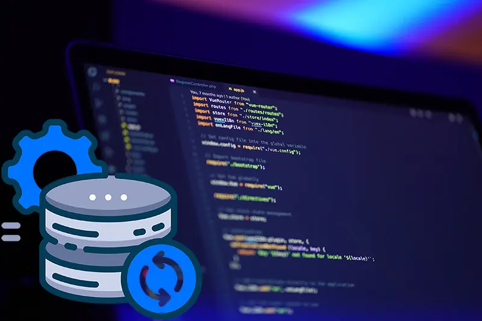

Servicio para Computadoras y Macbooks
En Tecnolab Cali diagnosticamos y reparamos fallas electrónicas de computadores y MacBooks, solucionando problemas de hardware, software, rendimiento y encendido con atención técnica especializada. Cuando es necesario, intervenimos directamente la placa electrónica del equipo, analizando sus componentes, circuitos y líneas de alimentación para encontrar el origen de la falla y aplicar una solución profesional. Nuestro objetivo es recuperar el funcionamiento del equipo de forma efectiva y confiable, prolongando su vida útil. Contamos con una extensa base de datos de Bios, EC Bios, Boardviews y Esquemáticos que nos permitirán obtener resultados precisos en el diagnóstico y reparación de sus equipos electrónicos, acompañado a ello mano de obra bien calificada y con amplio conociemiento en la correcta manipulación de placas electrónicas y algo importante las medidas de seguridad para garantizar la integridad de todos y cada uno de los componentes que conforman un computador de escritorio, portátil, Macbook Air o Pro y Equipos Gamer.

Servicio para iPhone y Android
En Tecnolab Cali realizamos reparación especializada de dispositivos iPhone y Android, atendiendo fallas tanto de hardware como de software. Nuestro proceso inicia con un diagnóstico técnico para identificar el origen del problema y determinar la solución adecuada. Trabajamos en cambios de displays, baterías, conectores y sistemas de carga, además de fallas de encendido, rendimiento y funcionamiento general. También solucionamos problemas de software, sistema operativo, configuración y recuperación del funcionamiento del equipo. En reparaciones electrónicas intervenimos directamente los circuitos y componentes de la placa cuando la falla lo requiere, aplicando procedimientos técnicos orientados a recuperar el dispositivo de forma segura y confiable.

Reparación de Televisores
En Tecnolab realizamos diagnóstico y reparación especializada de televisores de diferentes marcas y tecnologías, atendiendo fallas comunes como ausencia de imagen, pantallas oscuras, líneas, parpadeos, problemas de iluminación LED, encendido y sonido. Nuestro proceso comienza con pruebas técnicas para localizar con precisión el origen de la falla, ya sea en el sistema de iluminación, fuente de alimentación, tarjetas principales u otros circuitos del equipo. Cuando es necesario reemplazar componentes, utilizamos repuestos de calidad y aplicamos procedimientos técnicos adecuados para garantizar una reparación confiable. Además, contamos con procesos avanzados para la recuperación de tarjetas y circuitos electrónicos, buscando extender la vida útil del televisor y evitar reemplazos innecesarios.

Reparación de consolas de videojuegos
En Tecnolab realizamos diagnóstico y reparación especializada de consolas y equipos de videojuegos, atendiendo fallas comunes como problemas de encendido, sobrecalentamiento, errores de lectura, fallas de imagen, puertos de conexión y funcionamiento irregular. Nuestro proceso comienza con una evaluación técnica para identificar con precisión el origen de la falla y determinar el procedimiento adecuado. Realizamos mantenimientos preventivos y correctivos, limpieza interna, renovación de componentes térmicos y revisión de los principales circuitos y sistemas de alimentación. Cuando es necesario reemplazar componentes, utilizamos repuestos de calidad y aplicamos procedimientos técnicos adecuados para garantizar una reparación confiable. Además, contamos con procesos especializados para la recuperación de placas y circuitos electrónicos, buscando prolongar la vida útil de las consolas y recuperar su funcionamiento de forma segura y eficiente.

Desarrollo y Recuperación de Datos
En Tecnolab desarrollamos soluciones de software y servicios especializados de recuperación de datos, orientados a optimizar procesos y proteger la información de nuestros clientes. Diseñamos y desarrollamos aplicaciones móviles, software de escritorio y páginas web, adaptando cada proyecto a las necesidades específicas de la empresa o usuario. También realizamos procesos de recuperación de información en discos HDD, evaluando su estado y aplicando procedimientos técnicos según el tipo de falla presentada. Nuestro trabajo integra desarrollo tecnológico, diagnóstico especializado y soluciones personalizadas, buscando ofrecer herramientas funcionales y procesos confiables que aporten eficiencia, continuidad y respaldo a la información.